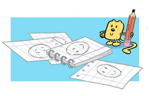

Below are some log lines for the first round of premises that were submitted to the network.
All the stories were generally well recieved and I wrote up an outline for the "Tale Of Tails" episode. We should get notes on that shortly.
In the meantime we have other writers generating premises with the hope that we will find a few writers to bring on staff. It's a lot of fun to see what other people do with the characters that I have lived with for so long.
It's all part of the process of figuring out who these characters really are.
And as a side note, the Wubblog lawyers have informed me that I should let everyone know that we will not be accepting any premises through the blog, or through e-mail, or through anything.
LOG LINES:
Monster Madness: Through her 'Monster Masher' machine and his level-headed
rationale, Widget, and Walden help Wubby overcome his fear of monsters
(precipitated by a cheesy late-night scary movie).
Goo-Goo Grief: Wubby, Widget, and Walden try to figure out why the Goo-Goo
(a large elephant-type creature) on Wubby's front lawn is so sad.
The Wubby Shuffle: Widget and Wubby learn the value of playing fair after
Widget invents a pair of spring-loaded shoes for Wubby to cheat and win at
jumpity-jump.
A Clean Sweep: Widget and Walden assist Wubby in cleaning his house the
old-fashioned way after Widget's Clean-O-Matic 3000 machine makes a bigger
mess of the situation than before.
A Tale of Tails: Widget and Walden help Wubby come to grips with his very
different long and bendy tail.
Ants in Your Pants: Walden constructs an ant farm to demonstrate teamwork to
Wubby. Putting the lesson to good use, Wubby, Widget, and Walden must work
as a team to rid the house of ants after the bugs escape from their
community.
Out of Shape: Wubby, Widget, and Walden journey through Triangle Town,
Squaresville, Roundberg, and Squiggle City as they help Mr. Triangle get
back to his home in Triangle Town.
Tubby Wubby: Wubby goes on a diet and exercise regime after he gains weight
from eating too many of Walden's pies.
Mr. Know-it-All: Walden gets an extreme makeover when he attempts to shed
his image as a quirky intellectual.
Plaidville or Bust: Wubby, Widget, and Walden visit Wubby's cousin in
Plaidville, where everything is exciting and new.
A Little Help from your Friends: Wubby's house turns into a disaster area
when he cooks dinner for Widget and Walden.
Finding Filbert: Wubby discovers a new friend: his shadow, whom he names
Filbert.
Wings for Wubby: Wubby wonders what it would be like to fly. Widget builds
him a nice pair of wings which don't quite work. But with the help of
Walden, a couple of balloons allow Wubby to experience the sensation of
flying.
A Stream of Distractions: Wubby gets distracted while washing the dishes and
leaves the faucet running, accidentally flooding the whole town.